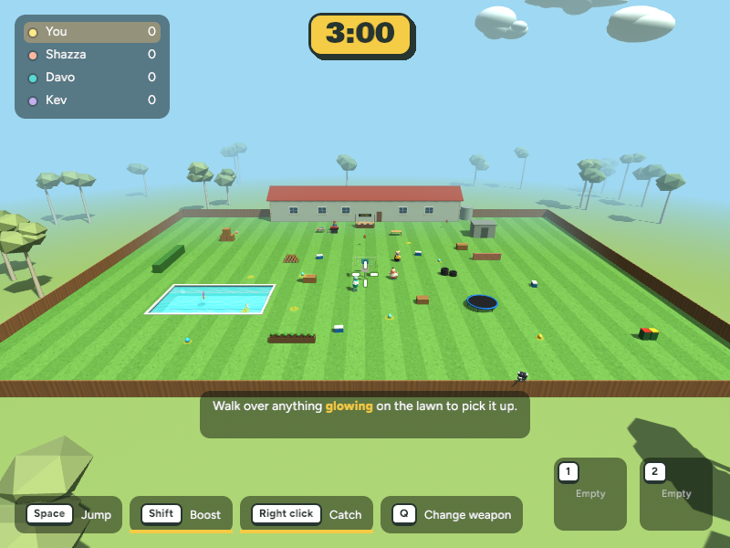
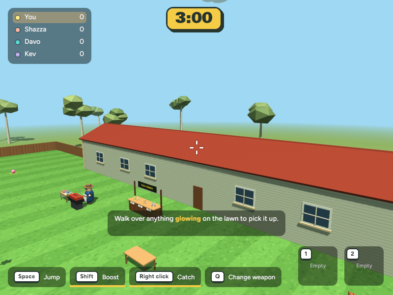
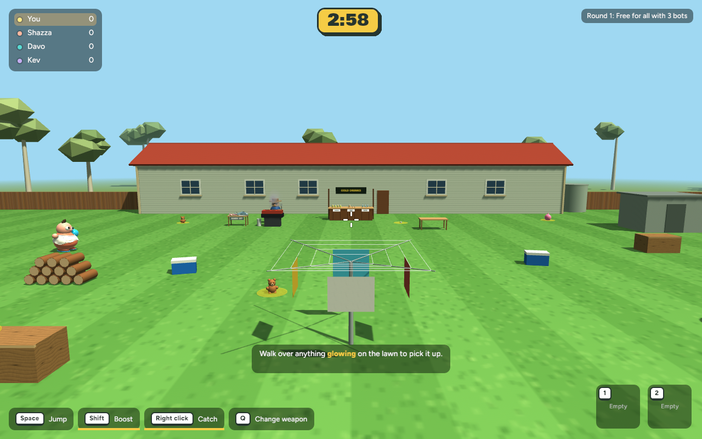

Backyard visual pass
Native Rust captures: environment overview, house details, and a short Free for All bot run.

Overall backyard and surrounding props

House roof edge, weatherboards, windows, and nearby yard props
Free for All bot movement, start of capture

Free for All bot movement, 1.5 seconds later